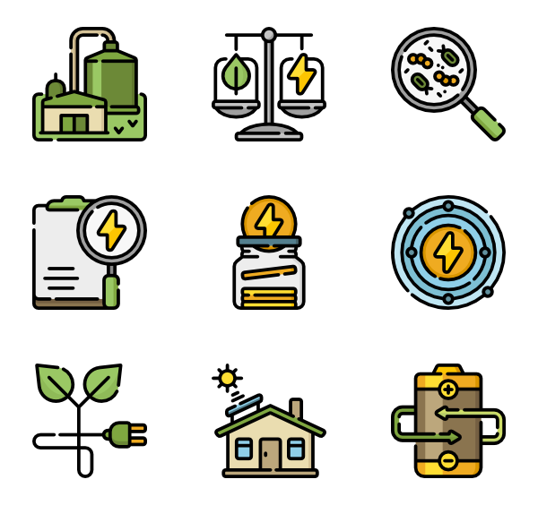

Утилитаризм является моральным учением на базе гедонизма/эвдемонизма и консеквенциализма. В отличие от гедонизма/эвдемонизма, он всегда является только предписательным, а не описательным, учением. Утилитаризм утверждает, что каждый человек должен стремиться поступать так, чтобы максимизировать удовольствие/счастье всех существ, которые способны его испытывать. Любой утилитарист является гедонистом или эвдемонизмом, но обратное неверно.
Рост населения планеты, экономической активности и потребления мяса могут привести к нехватке водных ресурсов в мире. По всему миру возникают очаги с "крайним дефицитом воды", по данным вашингтонского Института мировых ресурсов. Нехватка водных ресурсов может привести к конфликтам и миграции миллионов людей, а также стать дестабилизировать политическую ситуацию, предупреждают ученые.
Проблема утилитаризм:
Утилитаризм является моральным учением на базе гедонизма/эвдемонизма и консеквенциализма. В отличие от гедонизма/эвдемонизма, он всегда является только предписательным, а не описательным, учением. Утилитаризм утверждает, что каждый человек должен стремиться поступать так, чтобы максимизировать удовольствие/счастье всех существ, которые способны его испытывать. Любой утилитарист является гедонистом или эвдемонизмом, но обратное неверно.
Проблема дефицит качества:
Рост населения планеты, экономической активности и потребления мяса могут привести к нехватке водных ресурсов в мире. По всему миру возникают очаги с "крайним дефицитом воды", по данным вашингтонского Института мировых ресурсов. Нехватка водных ресурсов может привести к конфликтам и миграции миллионов людей, а также стать дестабилизировать политическую ситуацию, предупреждают ученые.